01ภาพรวม

ฝูงสิ่งมีชีวิตที่เดินทางข้ามอวกาศมากินทุกสิ่ง — ถูกควบคุมโดยจิตรวม Hive Mind
02ต้นกำเนิด
Tyranids มาจากนอกทางช้างเผือก ไม่มีใครรู้ว่าต้นกำเนิดคืออะไร กองยานแต่ละกอง (Hive Fleet) เป็นสิ่งมีชีวิตทั้งหมด ทุกตัวเชื่อมต่อกับจิตรวม Hive Mind จิตรวมนี้สร้าง 'Shadow in the Warp' ที่รบกวนการสื่อสารด้วยพลังจิตของเผ่าอื่น
03เนื้อเรื่องเจาะลึก
มาจากนอกกาแล็กซี
Tyranids เดินทางมาจากอวกาศระหว่างกาแล็กซี ยังไม่มีใครรู้ว่าทำไม บางทฤษฎีเชื่อว่าพวกเขาหนีบางสิ่งที่น่ากลัวกว่า หรือมาเพราะแสงของ Astronomican ดึงดูด ฝูงแรกที่จักรวรรดิเจอคือ Behemoth ที่บุก Ultramar ในปี 745.M41
Hive Fleets
ฝูงที่มีชื่อเสียง: Behemoth (ถูกทำลายที่ Macragge), Kraken (แยกเป็นฝูงเล็กบุกหลายทิศ), Leviathan (บุกจากใต้กาแล็กซี และถล่ม Baal) — ทุกฝูงเป็นเพียงส่วนหน้าของสิ่งที่ใหญ่กว่า
04ยุค 30K — ในยุค Great Crusade และ Horus Heresy
ยุค 30K ยังไม่มีการบันทึกการบุกของ Tyranids — Hive Fleet Behemoth มาถึงกาแล็กซีครั้งแรกในปี 745.M41 นานหลังยุค Heresy
ดูภาพรวมยุค 30K ทั้งหมดที่ เนื้อเรื่องยุค 30K และความต่างของสองยุคที่ เปรียบเทียบ 30K vs 40K
05นิสัยและวัฒนธรรม
- ดูดซับพันธุกรรมของเหยื่อเพื่อวิวัฒนาการสร้างอาวุธใหม่
- ดาวที่ถูกกินจะเหลือเพียงหินเปลือย
- ส่ง Genestealer ล่วงหน้าไปแทรกซึมก่อน
06จุดที่น่าสนใจ
- Swarmlord: ร่างที่ Hive Mind ใช้บัญชาการโดยตรง ถูกฆ่าก็เกิดใหม่
- ทุกตัวไม่กลัวตาย
07ความสามารถพิเศษ
สิ่งที่ทำให้ Tyranids แตกต่างจากทัพอื่น — ทั้งพลังที่ติดตัวมาทั้งเผ่า/ทัพ และความสามารถของบุคคลสำคัญ
ของทั้งเผ่า/ทัพ
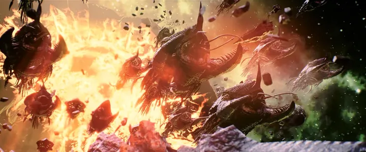
Hive Mind — จิตเดียวควบคุมทั้งหมด
Tyranid ทุกตัวเชื่อมกับจิตรวมขนาดมหึมา ตัวเล็กไม่มีความคิดของตัวเอง ถ้าตัดการเชื่อมต่อ (ฆ่าสัตว์ Synapse) ตัวเล็กจะกลับเป็นสัตว์ป่าตามสัญชาตญาณ
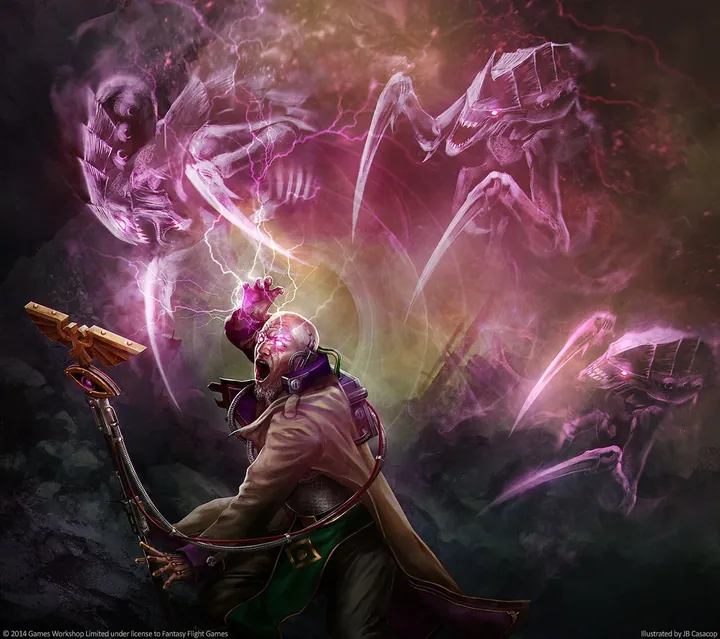
Shadow in the Warp
ฝูงที่เข้าใกล้สร้าง "เงา" ใน Warp ปิดกั้นการสื่อสารทางจิตของ Astropath และทำให้ยานเดินทาง Warp ไม่ได้ ดาวที่ถูกบุกจึงถูกตัดขาดจากความช่วยเหลือ และผู้ใช้พลังจิตบางคนเสียสติ
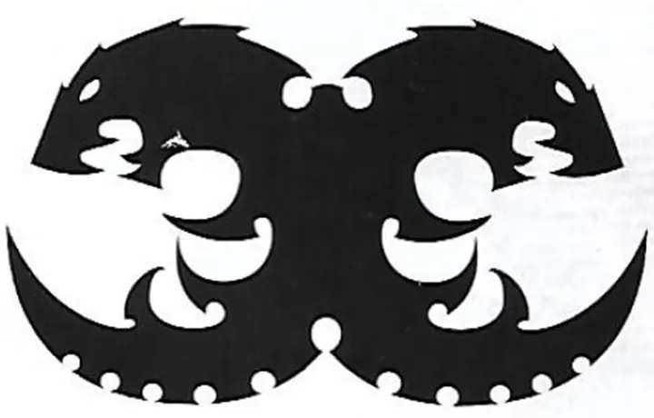
กิน แล้ววิวัฒนาการ
Tyranids ย่อยทุกสิ่งมีชีวิตบนดาวจนเหลือแต่หิน แล้วดูดซับพันธุกรรมไปสร้างสายพันธุ์ใหม่ที่เหมาะกับศัตรู — ยิ่งสู้กับใครนาน ยิ่งปรับตัวสู้คนนั้นได้ดี
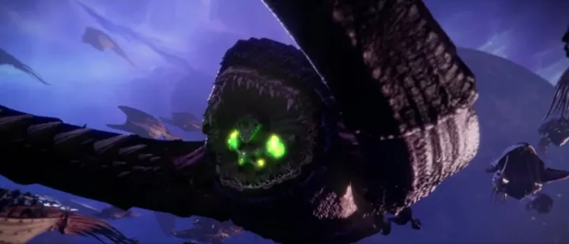
อาวุธมีชีวิต
ปืนของ Tyranids คือสัตว์ที่ยิงด้วงหรือกรด เกราะคือกระดองที่งอกเอง ยานอวกาศคือสัตว์ขนาดเท่าเมือง
ของบุคคลสำคัญ

The Swarmlord
แม่ทัพที่เกิดใหม่เสมอสัตว์ผู้บัญชาการที่ถูกสร้างเพื่อรับมือศัตรูอัจฉริยะ เมื่อตายความทรงจำจะกลับไปยัง Hive Mind และถูกสร้างใหม่ในสงครามครั้งต่อไป — สู้กับ Calgar ที่ Macragge

Old One Eye
Carnifex ที่ไม่ยอมตายถูกแช่แข็งในน้ำแข็งบนดาว Calth แล้วตื่นขึ้นมาอาละวาดหลายครั้ง ร่างของมันซ่อมแซมตัวเองได้เร็วผิดปกติ

Deathleaper
ฝันร้ายของผู้บัญชาการLictor ที่ชอบหลอกหลอนผู้นำศัตรูก่อนฆ่า ปรากฏตัวแล้วหายไปอย่างไร้ร่องรอยจนเหยื่อหวาดระแวงแทบเสียสติ
08หน่วยและบทบาทในกองทัพ
Tyranids ไม่มีปัจเจก — ทุกตัวเชื่อมกับ Hive Mind จิตรวมขนาดมหึมา แต่ละสายพันธุ์ถูกออกแบบมาให้ทำหน้าที่เฉพาะ เหมือนอวัยวะของสิ่งมีชีวิตตัวเดียว

Hive Tyrant / Swarmlord
ไฮฟ์ไทแรนต์ / สวอร์มลอร์ดสัตว์ผู้บัญชาการที่ถ่ายทอดความคิดของ Hive Mind สู่ฝูง ส่วน Swarmlord คือแม่ทัพสูงสุดที่ถูกสร้างใหม่ทุกครั้งที่ตาย
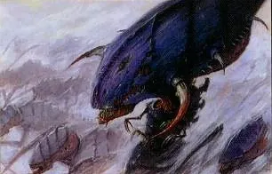
Neurothrope / Zoanthrope
นิวโรโทรป / โซแอนโทรปสัตว์หัวโตที่เป็นท่อพลังจิตของ Hive Mind ยิงพลังจิตและสร้างโล่
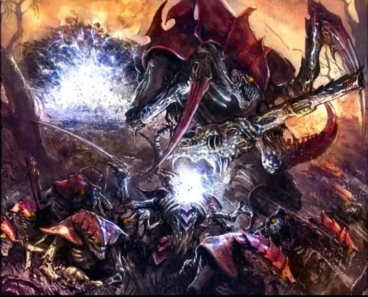
Tyranid Warriors
ไทรานิดวอร์ริเออร์นักรบระดับกลางที่เป็น "ปมประสาท" สั่งการสัตว์ตัวเล็กรอบตัว
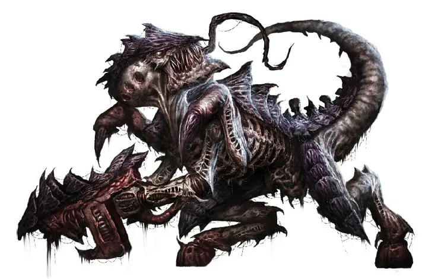
Termagants / Hormagaunts
เทอร์มาแกนต์ / ฮอร์มาแกนต์สัตว์ตัวเล็กจำนวนมหาศาล Termagant ยิงด้วยปืนชีวภาพ Hormagaunt ฟันด้วยกรงเล็บ
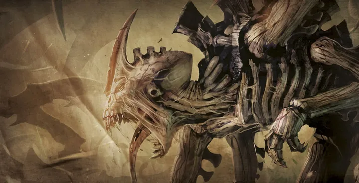
Genestealers
จีนสตีลเลอร์หน่วยหน้าที่แทรกซึมก่อนฝูงมา ฝังพันธุกรรมในมนุษย์จนเกิดลัทธิ Genestealer Cult
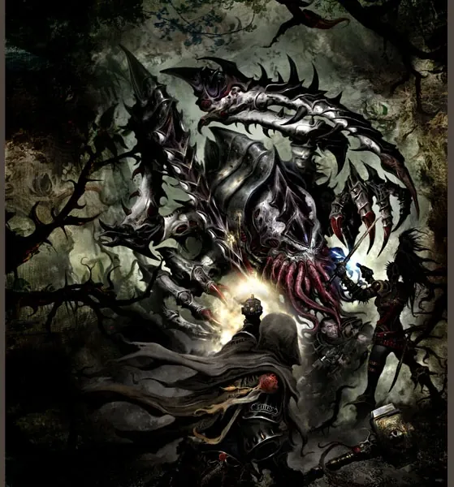
Lictor
ลิกเตอร์นักล่าพรางตัว เป็นหน่วยสอดแนมส่งกลิ่นเรียกฝูงมาหาเหยื่อ
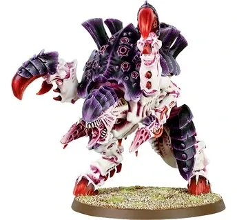
Carnifex
คาร์นิเฟ็กซ์สัตว์รถถังมีชีวิต พุ่งชนกำแพงและรถถังได้
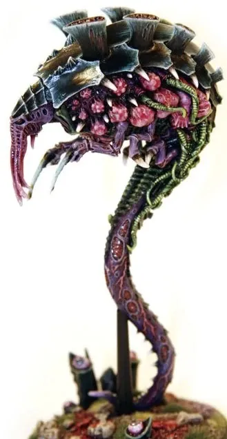
Biovore / Ripper
ไบโอวอร์ / ริปเปอร์Biovore ยิงสปอร์ระเบิด ส่วน Ripper คือตัวหนอนย่อยสลายชีวมวลกลับไปให้ยานแม่
Hive Ship / Norn Queen
ยานแม่ / นอร์นควีนยานมีชีวิตขนาดยักษ์ที่ผลิตสัตว์ใหม่ ส่วน Norn Queen คือโรงงานพันธุกรรมที่ออกแบบสายพันธุ์ตามศัตรูที่เจอ
09วีรกรรมและเหตุการณ์สำคัญ
Hive Fleet Behemoth
Tyranids บุกกาแล็กซีครั้งแรก ถูกหยุดที่ Macragge
Hive Fleet Kraken
บุกหลายทิศทาง
Hive Fleet Leviathan
บุกจากใต้ระนาบกาแล็กซีและปิดล้อม Baal
Fourth Tyrannic War
Leviathan บุกครั้งใหม่
10ตัวละครสำคัญ
The Swarmlord
ผู้บัญชาการของ Hive Mindร่างอัจฉริยะทางทหาร
11ยุค 40K — สหัสวรรษที่ 41
ยุค 40K Tyranids บุกกาแล็กซีมาหลายระลอก
12เนื้อเรื่องล่าสุด (Era Indomitus / M42)
Hive Fleet Leviathan กลับมาใน Fourth Tyrannic War และจักรวรรดิต้องสู้รบอย่างหนักกับการรุกคืบครั้งนี้
หลังการเกิด Great Rift ปฏิทินของจักรวรรดิคลาดเคลื่อน เหตุการณ์ยุคปัจจุบันจึงมักระบุเพียง 'M42' ไม่มีปีที่แน่นอน
13แกลเลอรี


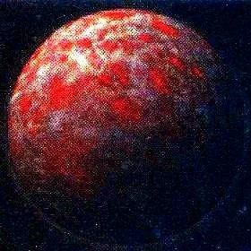